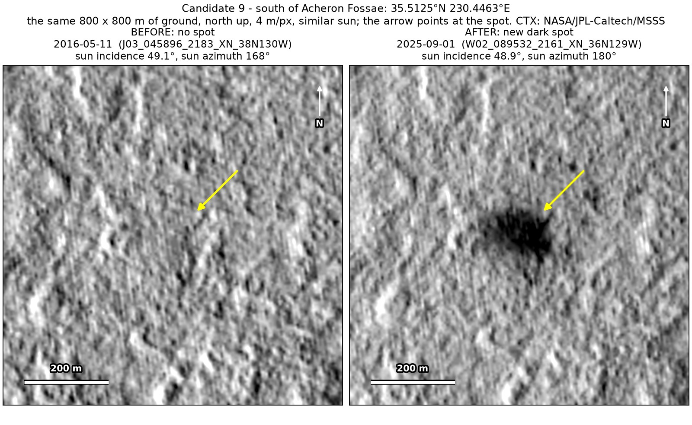
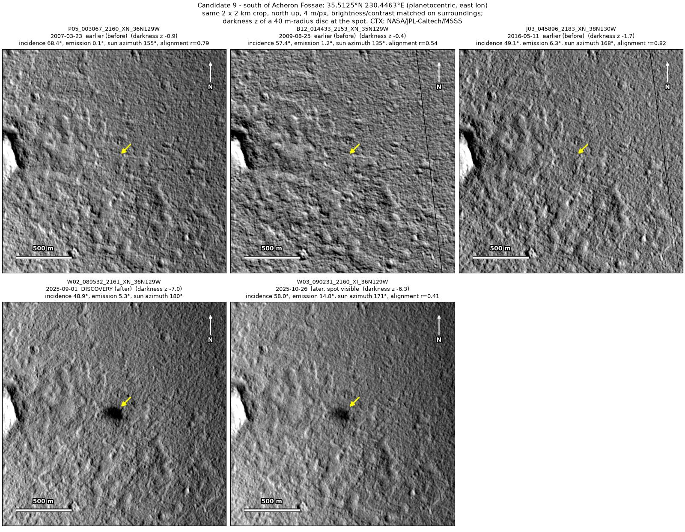
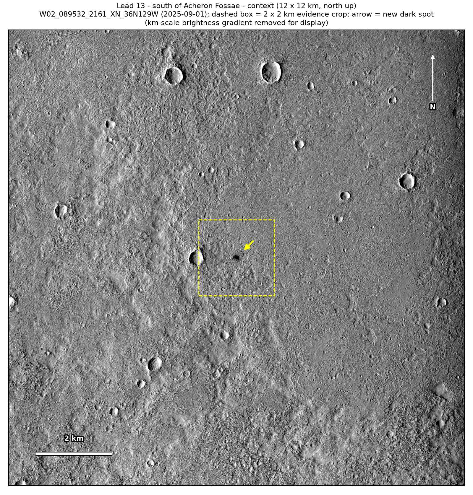

Professor of Mathematics
Paata Ivanisvili
Department of Mathematics, University of California, Irvine

← Possible new impact sites on Mars
Candidate 9: Plains south of Acheron Fossae
Strong · roughly 70%

What changed. A dark patch 100 to 120 m across with a darker centre appeared on these northern plains between 2016 and 2025.
Why it may be a new impact. It is absent in three earlier images, one of them under the same sun angle, and unchanged in two 2025 images taken from different viewing angles. Both sightings were in northern summer, so seasonal frost cannot explain it.
- Location
- 35.513° N, 230.446° E (129.554° W)
- Absent
- 23 March 2007, 25 August 2009 and 11 May 2016
- Present
- 1 September 2025 and 26 October 2025
- Size
- Dark patch 100 to 120 m across, with a darker centre
- Confidence
- Strong candidate; roughly 70% that it is a new impact.
- Caveat
- It lies outside every footprint of the high-resolution HiRISE camera. Like every candidate here, it is unconfirmed: see the caveat.

